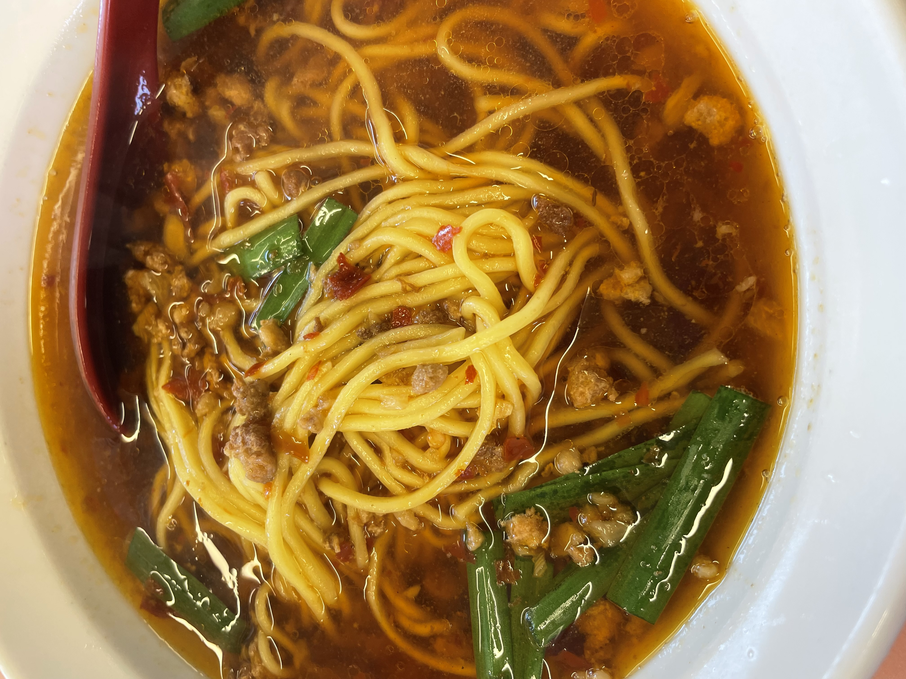
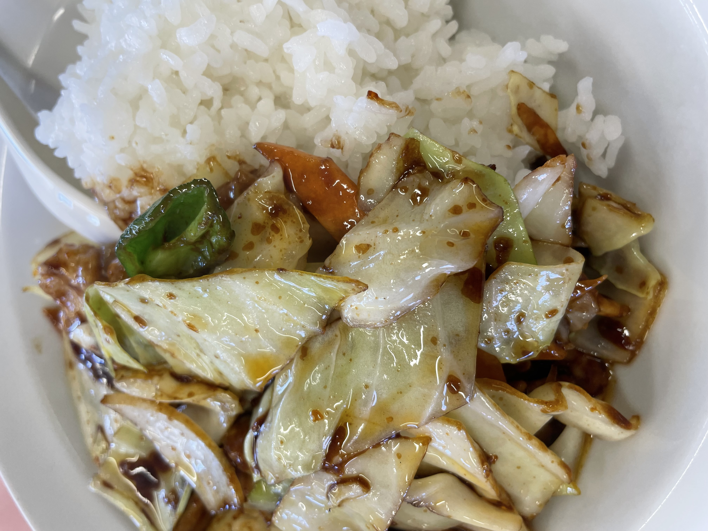
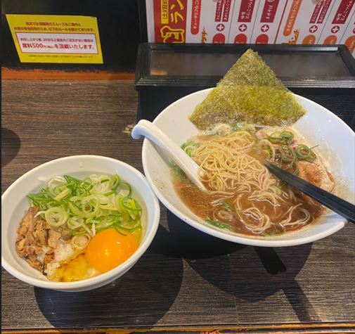

26/5/3 (Posted) TERUO＠teruo
I think it's insanely delicious. I seriously love it. The combination of Taiwanese ramen and twice-cooked pork rice is just amazing. I’ve been giving it a 4.0 every time, but yesterday it was a 4.5. It really is that good.
■Ramen Set (Taiwanese Ramen + Twice-Cooked Pork Rice)
⇒★★★★ 4.5
■Shisenrou
■Nagoya City
■4-11 Chiyogaoka, Chikusa-ku, Nagoya, Aichi
■780 yen
■Ate day: 26/5/2


(Photo taken by myself)
26/4/25 (Posted) NAOKI＠naoki
There is no strong odor typical of tonkotsu ramen, and the seasoning goes well with rice, making it very tasty. The free side dish of bean sprouts is also spicy and so good that you’ll want to keep eating it endlessly.
■Seared Tonkotsu Ramen + Mixed Rice
⇒★★★★ 4.0
■Menya Isshin
■Nagoya City
■Around 1000 yen
■Ate day: 26/4/25

(Photo taken by myself)
26/4/19 (Posted) TERUO＠teruo
The tantan noodles were pretty good. The fried chicken (Yurinchi) was also good.
■C Lunch (Tantan Noodles + Yurinchi)
⇒★★★⋆ 3.5
■Mankakan
■Nagoya City
■900 yen
■Ate day: 26/4/19 (Photo taken by myself)
26/4/18 (posted) TERUO＠teruo
Consistently delicious. As expected.
■Ramen Set (Taiwan Ramen + Twice-Cooked Pork Rice)
⇒★★★★ 4.0
■Shisenro
■Nagoya City
■780 yen
■Ate day：26/4/18 (photos taken by me)
26/4/15 (Posted) TERUO＠teruo
If it's an extra serving of noodles, it's just normally tasty.
■Extra noodles for meat soba
⇒★★★⋆ 3.5
■Marugen Ramen (Meito Kanare Branch)
■Nagoya City
■165 yen
■Ate day: 26/4/14 (Photo taken by myself)
26/4/14（Posted）TERUO＠teruo
Good.
■Meat Soba
⇒★★★★ 4.0
■Marugen Ramen Meito Kanare Branch
■Nagoya City
■792 yen
■Ate day：26/4/14 （Photo taken by myself）
26/3/27 (Posted) TERUO@teruo
Came to a Jiro-style ramen place for the first time in a long while. I had abura soba (soupless ramen) 300g with garlic and extra fat. It was delicious. It was also my first time at Rekishi wo Kizame.
Honestly, with 300g noodles, I thought midway that I messed up. I felt like 200g would have been better, but after finishing and waiting a bit, I started thinking, ahhhh maybe it was good that I didn’t go with 200g. 300g might have been the right choice, but also feels like it was too much.
If it’s your first time at Rekishi wo Kizame, I think 200g is fine. Also, I went with soupless ramen right away. I’ve never tried the regular ramen with soup. Kinda curious about that.
And here’s how the operation works:
7654321
7654321
7654321
You line up in 3 rows. Each row holds up to 7 people. When the staff calls you, people from the front to the end of one row enter one by one, buy a ticket, and then return to their original line.
It was delicious. I want to go again. First Jiro-style in a long time. The punch is super strong. I went with extra fat and garlic, but normal might have been fine too. Having an egg makes it easier to finish (dip the noodles in egg). I felt like “Rekishi wo Kizame” itself was an attraction. It’s entertainment lol
■Soupless Ramen (300g noodles, garlic, extra fat, egg)
⇒★★★★ 4.0
■Rekishi wo Kizame (Yagoto Branch)
■Nagoya City
■1150 yen
■Ate day: 26/3/27 (Photo taken by myself)
26/3/24（Posted）TERUO＠teruo
Very good. The twice-cooked pork rice is yummy.
■Ramen Set (Taiwan Ramen + Twice-Cooked Pork Rice)
⇒★★★★ 4.0
■Shisenro
■Nagoya City
■780 yen
■Ate day：26/3/24 （Photo taken by myself）
26/3/23 (Posted) TERUO＠teruo
Right after eating, I’d rate it 3.5. But in the end, I find myself wanting to eat it again.
■Ramen Set (Taiwan Ramen + Twice-Cooked Pork Rice)
⇒★★★★ 4.0
■Shisenro
■Nagoya City
■780 yen
■Ate day: 26/3/22 (Photo taken by myself)
26/3/18 (Posted) TERUO＠teruo
It was good. The ordering machine UI is not good. It would be better if the basic, standard meat soba ramen were displayed more clearly so you can easily understand which one it is.
I don’t think it’s a very good way of displaying it. Next time I want to try the basic one. By the way, it was a nice place. I’ll probably go again.
■Ajitama Meat Soba
⇒★★★⋆ 3.5
■Marugen Ramen Meito Kanare Branch
■Nagoya City
■957 yen
■Ate day: 26/3/17 (Photo taken by myself)
26/3/6（Posted）TERUO＠teruo
Want to eat it again. I don't even know how many times I've been to this place. I've never found a better abura soba than here. By the way, even though the name is Tokyo Abura Soba, it only exists in Nagoya. The price has gone up a lot compared to before. But it still reaches the level where I want to eat it again. Maybe the large size is actually tastier than the double portion. Probably because it becomes the right amount. Maybe I'll go with the large next time.
■Abura Soba (Double Portion)
⇒★★★★ 4.0
■Tokyo Abura Soba Honpo Nagoya Main Store
■Nagoya City
■1000 yen
■Ate day：26/3/1 （Photo taken by myself）
26/3/3（Posted）TERUO＠teruo
The fried rice was good. Also, the spicy garlic chives were good. I might go back once more to check.
■Fried Rice Set (Lunch)
⇒★★★⋆ 3.5
■Umaya Ramen Meito Hondori Branch
■Nagoya City
■1050 yen
■Ate day：26/2/27 （Photo I took）
26/2/18 (Posted) TERUO＠teruo
Both the soy sauce ramen and the mapo rice are high level. I can totally see why some people get hooked on the mapo rice.
■Ramen Set (Soy Sauce Ramen + Mapo Rice)
⇒★★★⋆ 3.5
■Shisenrou
■Nagoya City
■780yen
■Ate day: 26/2/13 (Photo taken by myself)
26/2/15 (Posted) TERUO＠teruo
As expected. I want to eat it again. Getting this for 1000 yen is amazing. tasty.
■Night Ramen Set (Taiwan Ramen + Fried Rice + Taiwan Sweet and Sour Pork)
⇒★★★★ 4.0
■Shisenrou
■Nagoya City
■1000yen
■Ate day: 26/2/11 (Photo I took myself)
26/2/3（Posted）TERUO＠teruo
The twice-cooked pork rice was insanely good.
■Ramen Set (Taiwan Ramen + Twice-Cooked Pork Rice)
⇒★★★★ 4.0
■Shisenrou
■NagoyaCity
■780yen
■Ate day：26/2/2 (Photos taken by me)
26/1/31（Posted）TERUO＠teruo
This store is good enough. I thought so because the Taiwan ramen is about 200 yen cheaper than the JR Nagoya Station branch.
■Taiwan Ramen
⇒★★★★ 4.0
■Misen Nagoya Station (Yanagibashi)
■Nagoya City
■770 yen
■Ate day：26/1/30 （Photo taken by myself）
26/1/30 (Posted) TERUO @teruo
I want to eat it again.
■Meat Ramen
⇒★★★★ 4.0
■Sugakiya(Aeon Mall Nagoya Dome-mae)
■NagoyaCity
■530yen
■Ate day: 26/1/20 (Photo taken by me)
26/1/30（Posted）TERUO＠teruo
I want to eat it again.
■Ramen Set (Taiwan Ramen + Fried Rice)
⇒★★★★ 4.0
■Shisenrou
■Nagoya City
■750 yen
■Ate day：26/1/14 (Photos taken by myself)
26/1/1 (Posted) TERUO @teruo
When I took the first sip of the soup,it had impact.
Somehow,it has a gentle flavor.
■Meat Ramen (× Start by taking a few spoonfuls of the soup first.)
⇒★★★★ 4.0
■Sugakiya(Aeon Mall Nagoya Dome-mae)
■NagoyaCity
■530yen
■Ate day: 26/1/1 (Photo taken by me)
25/12/31（Posted）TERUO＠teruo
good. That reassuring, comforting taste.
■Ramen with Meat
⇒★★★★ 4.0
■Sugakiya (Nagoya ESCA)
■Nagoya City
■590yen
■Ate day：25/12/30 (Photo taken by me)
25/12/29（Posted） TERUO@teruo
High Quality.
■Ramen set（Tonkotsu ramen＋Tenshinhan）
⇒★★★⋆ 3.5
■Shisenrou
■Nagoya City
■780yen
■Ate day: 25/12/27 (Photo taken by myself)
25/12/29（Posted） TERUO@teruo
4.0.
■Ramen set（Taiwan ramen＋fried rice）
⇒★★★★ 4.0
■Shisenrou
■Nagoya City
■750yen
■Ate day: 25/12/26 (Photo taken by myself)
25/12/29（Posted） TERUO@teruo
In the end,I want to eat it again..
■Ramen set（Taiwan ramen＋fried rice）
⇒★★★★ 4.0
■Shisenrou
■Nagoya City
■750yen
■Ate day: 25/12/22 (Photo taken by myself)
25/12/5（Posted） TERUO@teruo
Good.
■Taiwan Ramen
⇒★★★★ 4.0
■Shisenrou
■Nagoya City
■600yen
■Ate day: 25/12/5 (Photo taken by myself)
25/12/1（Posted） TERUO＠teruo
Yummy!! I love this.The soup is a monster.
With the Meat Ramen at 530 yen, I’m already happy. So damn good.
■[Super Ramen] Meat Ramen(×Start by drinking about five spoonfuls of the soup with the spoon provided. That’s where it begins.)
⇒★★★★⋆ 4.5
■Sugakiya (AEON Mall Nagoya Dome-mae)
■Nagoya City
■530yen
■Ate Day: 25/12/1 (Photo taken by myself)
 (Photo taken by myself)
(Photo taken by myself)

 (photos taken by me)
(photos taken by me)
 (Photo taken by myself)
(Photo taken by myself)
 （Photo taken by myself）
（Photo taken by myself）
 (Photo taken by myself)
(Photo taken by myself)

 （Photo taken by myself）
（Photo taken by myself）

 (Photo taken by myself)
(Photo taken by myself)
 (Photo taken by myself)
(Photo taken by myself)
 （Photo taken by myself）
（Photo taken by myself）

 （Photo I took）
（Photo I took）

 (Photo taken by myself)
(Photo taken by myself)


 (Photo I took myself)
(Photo I took myself)

 (Photos taken by me)
(Photos taken by me)
 （Photo taken by myself）
（Photo taken by myself）
 (Photo taken by me)
(Photo taken by me)

 (Photos taken by myself)
(Photos taken by myself)
 (Photo taken by me)
(Photo taken by me)
 (Photo taken by me)
(Photo taken by me)

 (Photo taken by myself)
(Photo taken by myself)

 (Photo taken by myself)
(Photo taken by myself)

 (Photo taken by myself)
(Photo taken by myself)
 (Photo taken by myself)
(Photo taken by myself)
 (Photo taken by myself)
(Photo taken by myself)